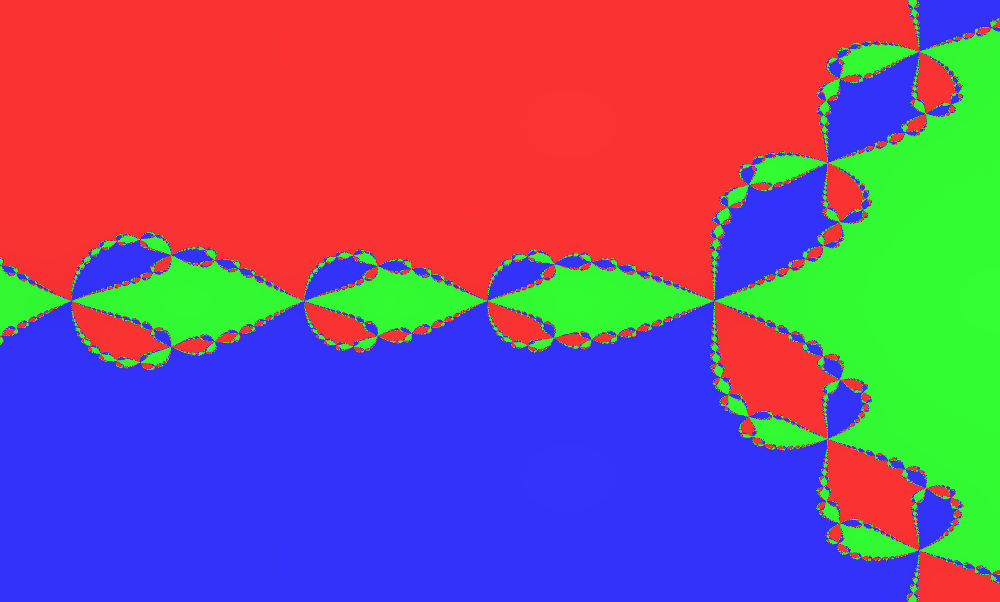

Fractals & Complex Dynamics Explorer
A GPU-driven Qt application that renders Mandelbrot, Julia, Multibrot, and Newton fractals with ultra-deep zoom, smooth coloring, and adaptive performance tuning.

GPU computing
GPU-Accelerated Rendering
Uses OpenGL 4.5 fragment shaders for real-time fractal generation and continuous coloring in the viewport.
z → ∞
Multiple Fractal Types
Includes Mandelbrot, Julia, Multibrot, and Newton fractals with parameter controls for each type.
ε
Deep Zoom Precision
Zoom depth is managed with high precision and perturbation techniques for extreme detail beyond standard floating-point limits.
runtime
Adaptive Performance
Automatically adjusts iteration counts during zoom and pan to maintain responsiveness while preserving image quality.
Qt 6 Interface
Built with Qt 6 and a QWidget-based UI, the application uses QOpenGLWidget for high-performance fractal rendering and standard Qt controls for parameter editing.
C++ Rendering Pipeline
The backend is a C++ controller that manages shader state, fractal parameters, and interaction events while dispatching compute work to GPU shaders.
Precision Management
Employs dual-mode precision with GPU double support and CPU long double fallback, plus perturbation orbits to preserve detail during deep zooms.
The Mandelbrot set contains infinitely many tiny copies of itself.
// Fractals like Mandelbrot are self-similar: smaller versions appear at many scales.
// The boundary is infinitely complex, with new detail revealed as you zoom.
// Julia sets are generated from the same formula but depend on a fixed constant.
// Fractal rendering reveals mathematics that blend art and chaos.
Ready to turn complex ideas into polished applications?
I build Qt C++ desktop software with strong mathematical foundations and immersive visual interfaces. Reach out to discuss research tools, demonstration apps, or portfolio work.
Contact via email